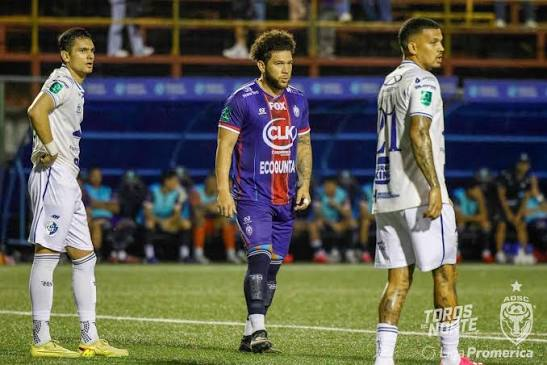

Carlos José Villanueva Ramos
📅 21 de septiembre 2026
⚽ 1. San Carlos cierra la primera vuelta con triunfo ante Cartaginés
San Carlos derrotó 1-0 a Cartaginés este domingo y cerró la primera vuelta del Torneo Apertura 2026 de Costa Rica dentro de los puestos de clasificación, dándole un golpe directo al líder del campeonato.
Los Toros del Norte, dirigidos por Walter Centeno, aprovecharon la localía para imponerse ante un Cartaginés que llegaba a la jornada en lo más alto de la tabla.
El gol de la victoria llegó en el primer tiempo gracias a un cabezazo de Jefferson Rivera, que superó al guardameta Kevin Briceño y le permitió a los locales controlar el resto del partido pese a los intentos brumosos por reaccionar.
El artículo desglosa varios puntos clave de este choque:
El gol decisivo: Jefferson Rivera apareció dentro del área para conectar un cabezazo certero que definió el marcador 1-0.
La reacción fallida de Cartaginés: El equipo de Amarini Villatoro adelantó líneas buscando el empate, pero no logró concretar y se fue sin sumar de la jornada.
Movimiento en la tabla: San Carlos escaló al cuarto lugar, una posición por encima de Alajuelense, mientras Cartaginés cayó al segundo puesto, detrás de Saprissa.
Lo que viene: Tras el parón por la Selección de Costa Rica, San Carlos visitará a Herediano y Cartaginés jugará de visita ante Sporting FC.
El resultado deja claro que la lucha por los primeros lugares del Apertura 2026 sigue muy pareja de cara a la segunda vuelta.

🚨 Las mejores acciones de la victoria por la mínima de San Carlos sobre Cartaginés pic.twitter.com/VMpHjuiPD5
— Fox Deportes Costa Rica (@foxdeportes_cr) September 21, 2026
Fuente: Gastón Ninin, ClaroSports